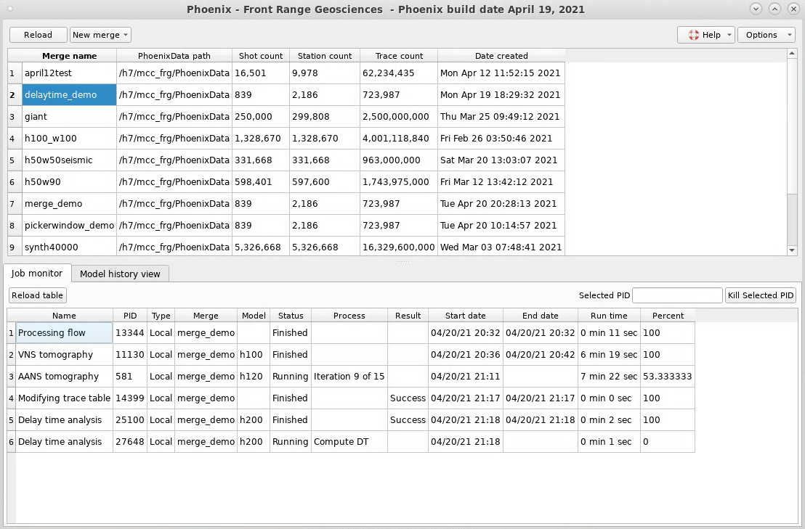

Home | Phoenix | DeepTrace | Company
Home | Phoenix | DeepTrace | Company
The Phoenix Main Window will appear when you start Phoenix.

The top half displays all Merges (projects). Right click on a row to open that Merge.
The bottom half displays all jobs, running or finished, for this session.
To create a new Merge, click the “New merge” button at the top left and select an import option.
The “Options” button on the top right opens a dropdown menu that allows you to access the SEG-Y Viewer/Dictionary Editor and the Dataset storage menu.